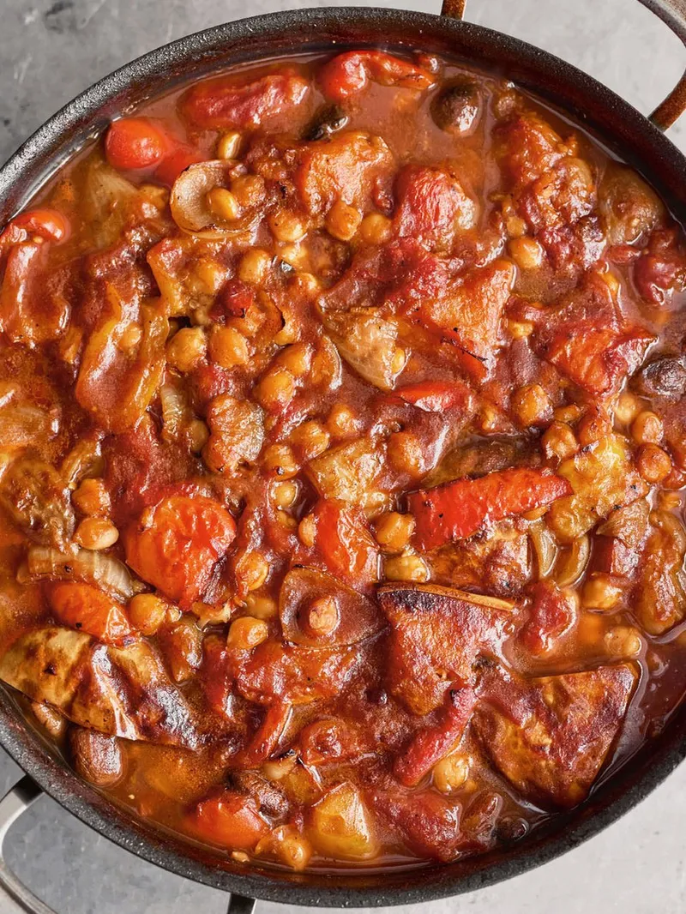

Veggie casserole

Description
Jamie olivers veggie casserole. A casserole with lots of veggies which works as great comfort food in any season.
I do my own version where I remove some ingredients like onions, mushrooms and vinegar & I add tomato paste for added acidity.
ingredients
- 2 Medium Sized Butternut squash
- 200G Tomato paste
- Olive oil
- Tapenade
- 230G Chickpeas
- 800g Crushed tomatoes
- Sea salt
- Slice the butternut squash in half, remove the seeds & put it on the pan
- Put the oven on 175C & put the butternut squash in for 1 hour 50 minutes.
- Take a large pot & drizzle olive oil in there until it covers the bottom
- Put the tomato paste in the pan and have it on medium heat for 5-10minutes
- put the crushed tomatoes in, put 500ml of water in the pot
- Add in the Tapenade, Salt and Chickpeas and let it simmer for 20 minutes then take it off the heat
- When the butternut squash is done, take the flesh with a spoon and put it in the pot and mix it around
And now you got a beautiful, tasty veggie casserole!